Software Engineering
SCC. 130: Information Systems
IS: Introduction
Overview
- Study of complementary networks of soft/hardware used by others to collect, filter, process, create, distribute data.
- Deals with practical and theoretical problems of collecting/analysing data & info.
- Bridges management and CS (models and related algorithm processes).
Association for Computer Machinery (ACM)
- IS specialists play key role in determining requirements for design / upgrading new / existing systems (must understand both technical / organisational factors to bridge).
- What must the system do?
- How to design the model?
- How to implement it effectively?
What is an Information System? (views) |
Technology | “System utilises computer hard/software; manual procedures; models for analysis; planning; control and decision making; database. Emphasises IT embedded in organisations” |
Social | “Social system which has embedded IT. Extent increases rapidly - doesn’t prevent overall system from being a social system. Not possible to design robust, effective system, incorporating significant amounts of technology without treating it as a social system” |
Socio-Technical | “Examines more than just technological system, or just social system, or even the two side by side; in addition, it investigates phenomena that emerge when the two interact” |
Process | “Work system whose process and activities are devoted to processing information, that is, capturing, transmitting, storing, retrieving, manipulating, and displaying information” e.g. Feedback from users (diagram)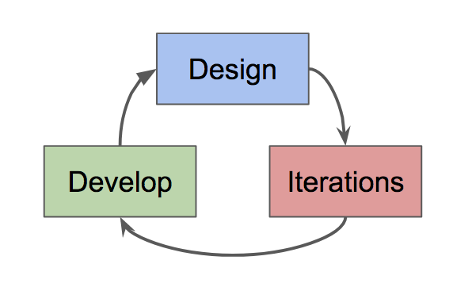 |
Types of Information Systems
- Transaction processing
- Decision support
- Knowledge management
- Learning management
- Data management
- ERP (Enterprise resource planning)
- GIS (Geographic information systems)
- Data warehouses
- Enterprise systems
- CRM (Customer relationship management)
Transaction processing (activity that changes stored data)
- Includes payroll, order processing, reservations, employee records, accounts payable/receivable (system collects, edits, manipulates & stores data).
Batch Processing | Real-time Processing |
System gathers transactions over time and processes them all at once e.g. payroll for employees. | System processes transaction in real-time e.g. when you book a seat on a flight, the seat is reserved in real-time, no one else can select it. |
OLTP: Online Transaction Processing | OLAP: Online Analytical Processing |
Traditional databases recording day to day operational activities e.g. airline bookings, banking systems, shopping. - Need extensive data control and availability.
- High multi-user throughput.
- Require a fast response time.
- Normally used by clerical users.
| Reports & summaries drawn from operational data to inform decision making. - Trend analysis and forecasting.
- Uses summarised historical data.
- Entails complex queries, often building large tables.
- Read-intensive.
- Decisions are strategic, response time is critical.
- Users are analysts/managers.
|
IS: Business application
Information system implementation
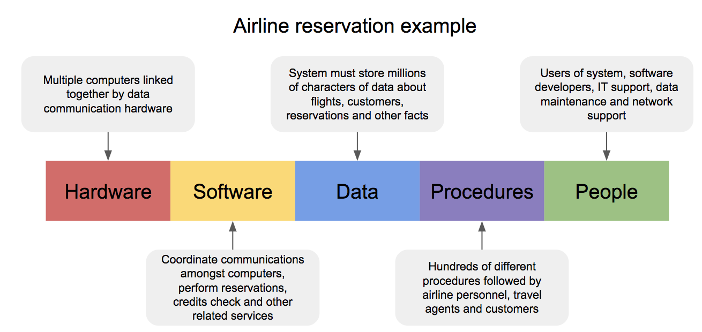
Historical trends in employment sectors
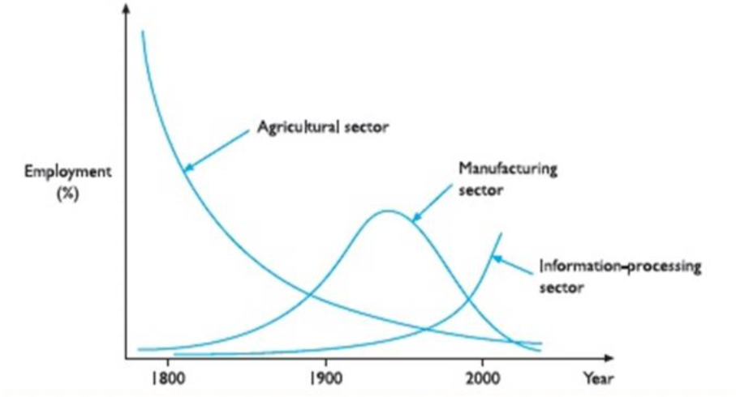
Patterns of employments in the UK (Curtis and Cobham, 2008)
Rapid incline in info-processing may be due to cheap computing power. The cost of 100,000 transistors in 1980s was $3,923, compared to 2013 where it is $0.01.
Waterfall approach | Linear sequential design for software development. Progress flows in one direction downwards through phases of conception, initiation, analysis, construction, testing, deployment and maintenance. |
Agile approach | Set of values and principles, which, when adapted can result in better quality code. This includes allowing to make changes to code at any time in the process, delivering software updates frequently, using working software as a measure of progress, simplifying where possible. |
IS: Transmission medium
Bandwidth
- Range of frequencies that a channel or medium can allow in Hz.
- Bandwidth in bits per second refers to rate of bit transmission that a channel can transmit.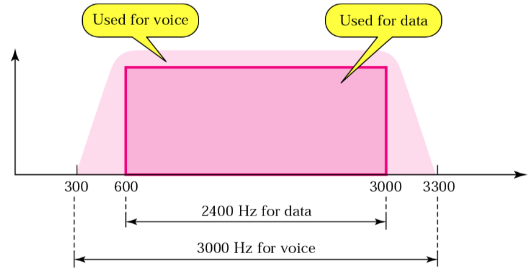
- Bandwidth of telephone is above 3,000 Hz for voice. If digitally transmitted it can have rate of 48 kbps. If reduced to 2,400 Hz then transmission is 38.4 kbps.
- Reason for not expanding bandwidth is because it would be too expensive & would cause traffic in the network.
- Data is sampled at one end, and reconstructed at the other end through the use of a filter. The more data points, the more accurate we can be in data transmission.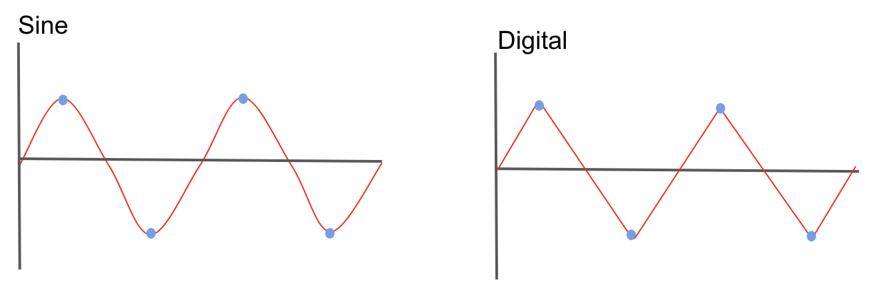
- 1 sample is 8 bits, therefore, bit rate is simply how many samples per second.
Throughput
- How fast we can send data through network, always less than bandwidth.
e.g. may have bandwidth of 1 Mbps, but device can only handle 200 kbps.
e.g. motorway designed to transmit 1,000 cars per minute, if congestion, then reduced to 100 cars per minute.
If bandwidth  passing average of 12,000 frames (10,000 bits each) per minute .˙.
passing average of 12,000 frames (10,000 bits each) per minute .˙. 
Latency
- Delay, how long it takes for entire message to completely arrive at destination from time of the first bit sent.
- Propagation time measures time required for electrical signal travel from source to destination () e.g.
 .˙.
.˙. - Transmision time is time for transmitter to emit single frame, depending on size of message and bandwidth of channel at transmitter ()
e.g. message size is 2.5 kbyte, and bandwidth of TX network is 1 Gbps .˙.
IS: Data communication
Effective Data Communication |
Delivery: correct destination. Data cannot be accessed by an un-intended user. | Accuracy: Altered data during transmission is unusable. Result of distortion or noise. |
Timeliness: Late data is of no use (packets usually re-sent if no acknowledgement received. Some delay will occur, but time relationship remains constant e.g. 1m/s. | Jitter: Variation of packet arrival time e.g. 1st packet arrives with 1s delay, 2nd with 5s, 3rd with 7s delay. |
Data Flow
- Simplex - data travels only in one direction e.g. mainframe → monitor.
- Half-duplex - data travels both directions but at separate times
e.g
- Full-duplex - data travels both directions at any time e.g. Station Station.
Local Area Network (LAN) | Privately owned, linking devices to a single office. Can be as simple as 2 PCs. Limited to a few km. Most LANs use connecting switch to route traffic to desired destination. Deals with devices close together. |
Metropolitan Area Network (MAN) | Can extend over entire City (TV Cable). Either owned and operated privately and publicly. Multiple devices can be connected e.g. a telephone box will have multiple houses connected to it. |
Wide Area Network (WAN) | Long-distance transmission (unlimited) of data, voice, image and video. WAN interconnects connecting devices (switches, routers modems). Usually run by communication companies, WAN owned by 1 company known as Enterprise Network. |
Internetworks
- Rare to see LAN and WAN isolated, today we often use a combination of both
Time Division Multiplexing (TDM) | Frequency Division Multiplexing (FDM) |
Allows a user to use a path for a certain amount of time. After their allocated time is over, another user can switch to using that particular path. Limited as it can take a while before the same user has access to the path again e.g. if a city of 1 million spends 3 minutes on pathway, then a user has to wait 6 years for the next turn. | Allows multiple users to share the same bandwidth by allocating specific carriers within a bandwidth. This means that multiple users can talk simultaneously.
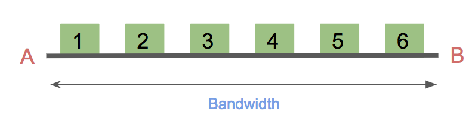 |
Combination of TDM and FDM is used to achieve the lowest possible traffic across bandwidth and pathways. Multiple FDM channels are used in different areas, then using TDM, each have access to the path for a few milliseconds which allows to control traffic. |
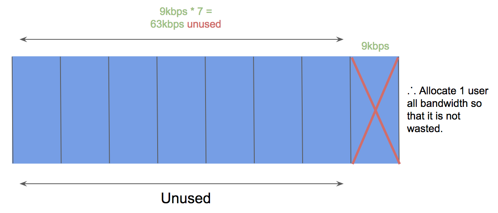
General Packet Radio Service (GPRS)
- If whole bandwidth is unused we can allocate more space for a user to speed up the process.
Circuit-switched networks
- Consists of set of switches connected by physical links.
- Connection between two stations is a dedicated path.
- Each link is divided into a number of channels using either TDM or FDM.
Switched Network Strategies |
Circuit Switching (data flows continuously, no messages or packets e.g. oil pipeline)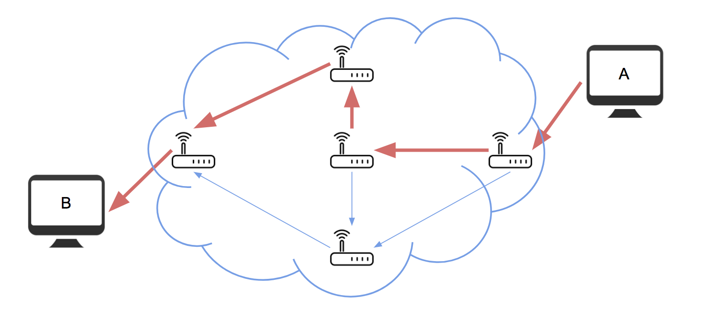 | - Dedicated circuit established across sequence of links.
- Path exists at both ends until call is finished.
- Several circuits share link, but each allocated fixed amount of link capacity.
- If circuit unused (silent telephone conversation) link capacity is wasted.
- If link capacity reached, new circuits cannot be established.
|
Packet Switching (data is routed by router, e.g. bus)
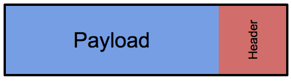 | - Nodes (routers) divide data into discrete ‘blocks’ or ‘packets’.
- Each packet sent separately into network.
- Packets have header (destination info).
- Packets follow different paths from source to destination - if one path has too much traffic, router will send packet a different route.
- Packet may get lost (resent if TCP, ignored if UDP)
|
IS: Protocols and Layering
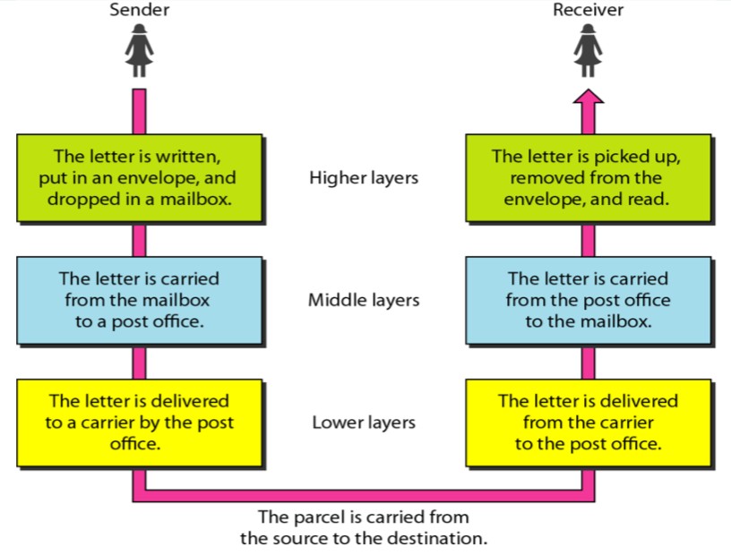
Protocol
- Set of rules and formats for endpoints to communicate.
- To cope with complexity, protocols are divided into number of layers (see right).
- Number of layers are dependant on the task.
- Can use the OSI model to communicate data.
Internet Protocol (IP) | Gives us IPv4 addresses - 32 bit address, uniquely defines host or router (148.88.1.1) and IPv6 addresses (2001:630:80:7000:1) - Network ID: identifies network e.g. University
- Host ID: Identifies host e.g. machine of user
|
User Datagram Protocol (UDP) | Send packet and forget about it (unreliable) |
Transmission Control Protocol (TCP) | Ordered delivery of data, sends acknowledgement when received (reliable) However: - If we send 10 packets instead of 2, less risk of corruption, only lose 1/10 instead of ½. Congestion is also less impactful.
|
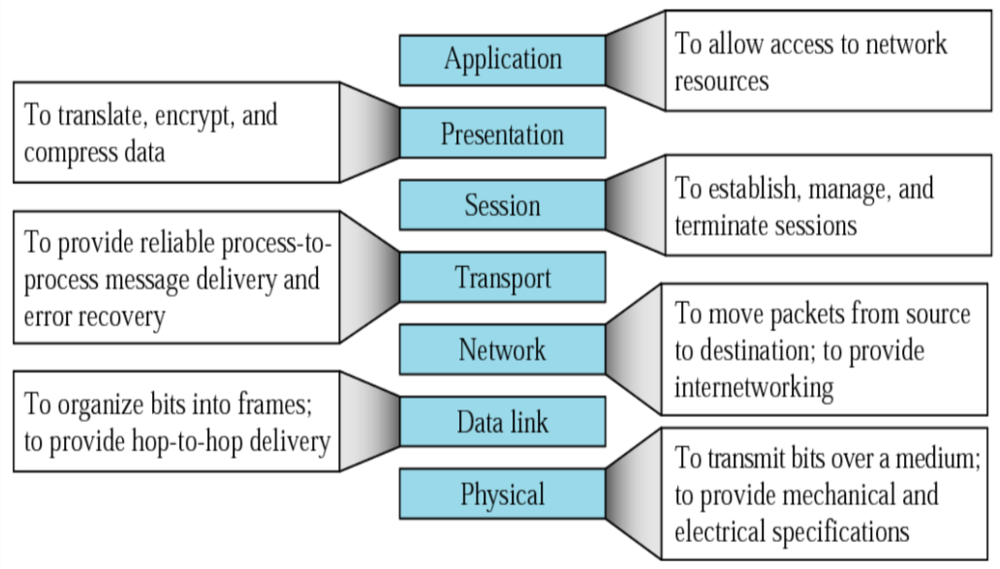
Layering
- Protocols divided into layers to cope with complexity
e.g. when you are sending a letter to a friend, you go through a series of protocols rather than being present at each step of the process.
IS: Servers
Internet and Web
- Internet: Switched network interconnects set of computers (hosts) i.e. the plumbing.
- Web: Service provided by computers distributed around the world, delivery of hyperlinked text documents. Transfers data from client → server → client (1).
Client server request response sequence
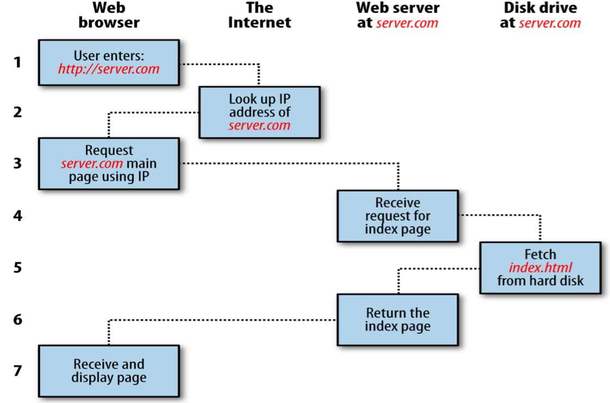
Dynamic client server request response sequence
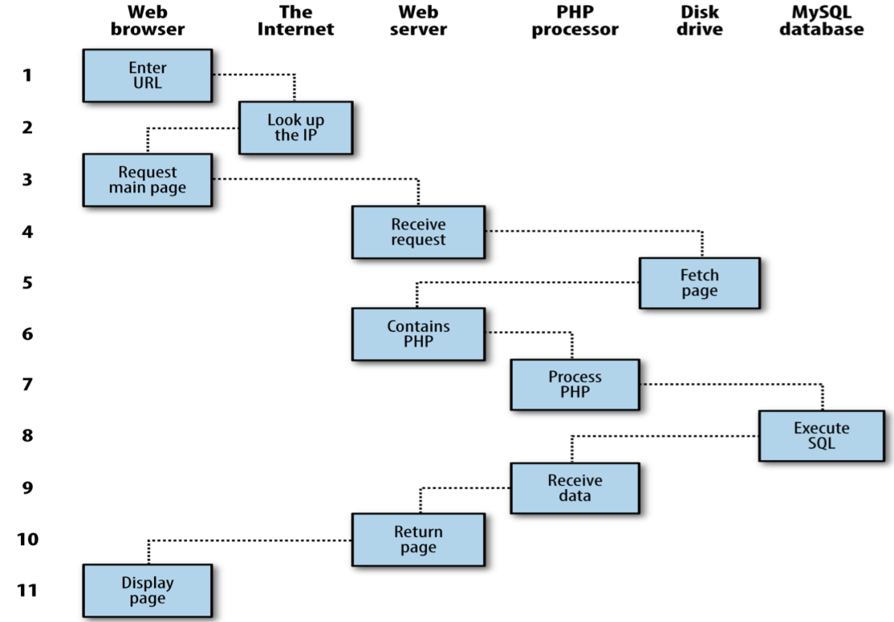
PHP commands
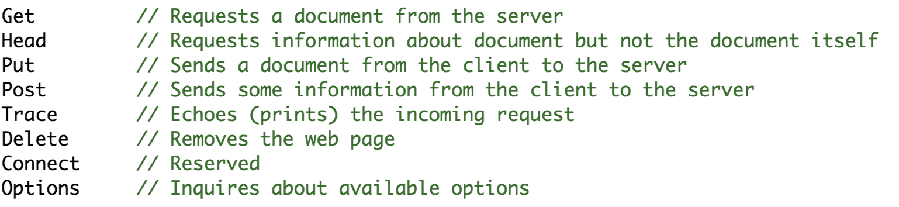
Three-tier Architecture
- General software architecture for client-server.
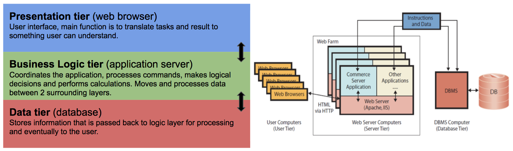
DB: Introduction
Who is involved?
- End users - customers, employees, patients, general public.
- Application developers - write software that users use to interact with database.
- Database administrators - design and manage a database.
- Database Management System (DBMS) designers - system programmers who write DBMS software.
Database
- Collection of information stored in order, most stored in multiple tables with several fields e.g. train timetables, student records, eBay)
- Information systems increasingly deals with large and larger volumes of data.
- Lots of different types of data is essential for companies, organisations etc.
- Data is presented in multiple tables.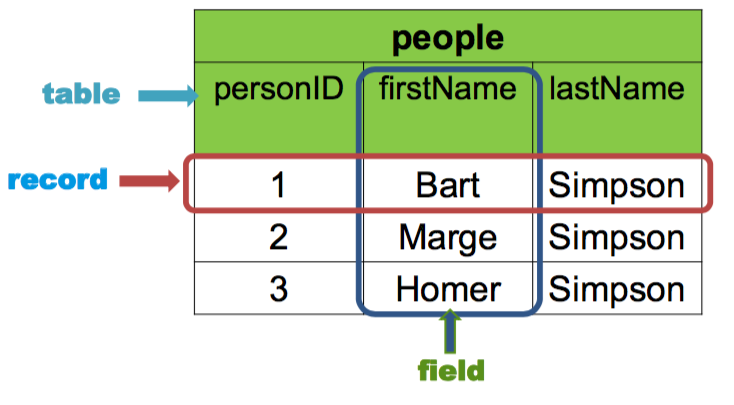
- Database must be able to cope with:
- Huge volumes of data
- Multiple simultaneous users and queries
- Sensitive data
- Complex data
- Dynamic data
The relational data model
- Edgar Codd, 1923-2003
- Based on maths theory and set of relations and predicate logic.
- Data visualised in tables, but arranged in sets of tuples with common attributes.
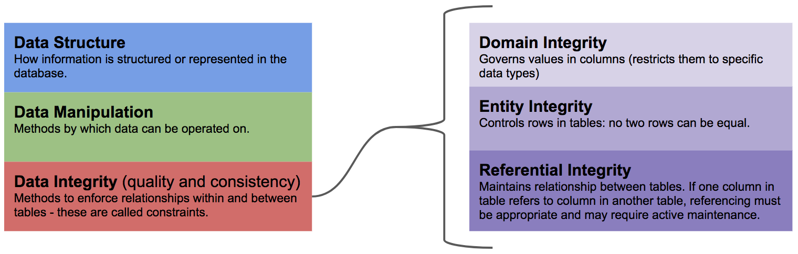
Integrity
Domain Integrity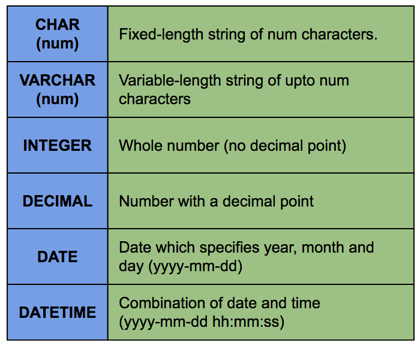 - Each attribute (column) has a name and domain.
- Domain specifies data type and range and default value
e.g. INTEGER (INT), DATE, VARCHAR(n) - Common SQL data types include →
- NULL represents ‘no data’ - attributes defined as NOT NULL cannot be NULL (enforce data entry).
- Doesn’t distinguish unknown / undefined.
|
Entity Integrity - Keys underpin relational model - represent attribute (or combo) used to uniquely identify tuples in relation (no such thing as row number, only unique ID).
- Primary keys uniquely identify tuples in relation (can’t be NULL).
- Foreign keys cross-references data between relations.
- Candidate key is any unique identifier of a tuple, cannot be referenced elsewhere.
|
Referential Integrity - Integrity between referencing other tables e.g. can’t make changes in one table without referencing tables also updating → leads to referential integrity violation.
- We can specify that one field is a foreign key in an existing table using: 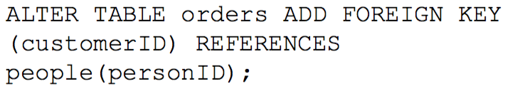
|
Structured Query Language (SQL)
- Standard language for dealing with relational databases, can be used to insert, search, update, delete database records.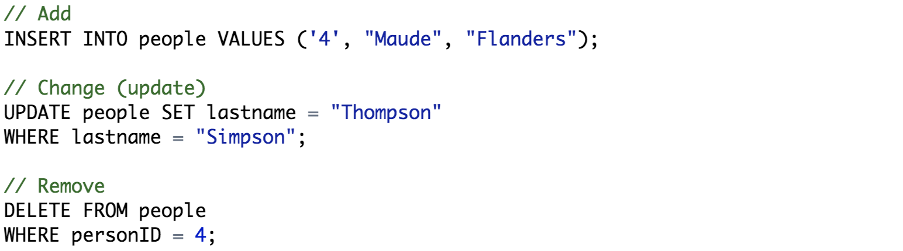
DB: SQL SELECT
Overview
Operator | Description |
IN | Within specific set of values |
BETWEEN | Between an inclusive range |
LIKE (NOT) | Includes a specific pattern of, use % as a wildcard e.g. “%foo% |
IS NULL | No data |
Ordering and aggregate functions
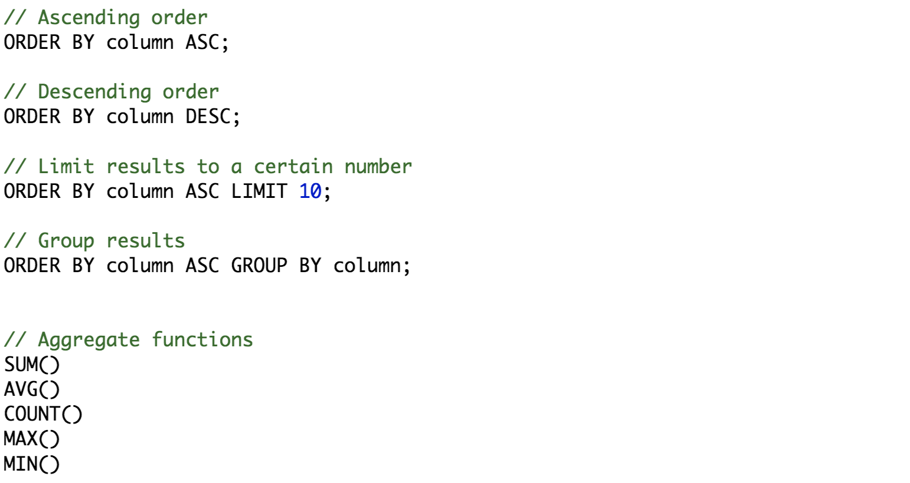
DB: Joining multiple tables
Cartesian product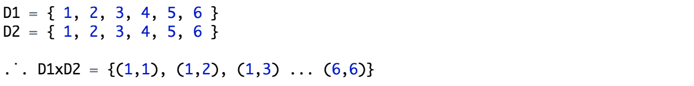
- Operation that returns a set from multiple sets e.g. dice →
- Returns all columns from all row combos of two tables.
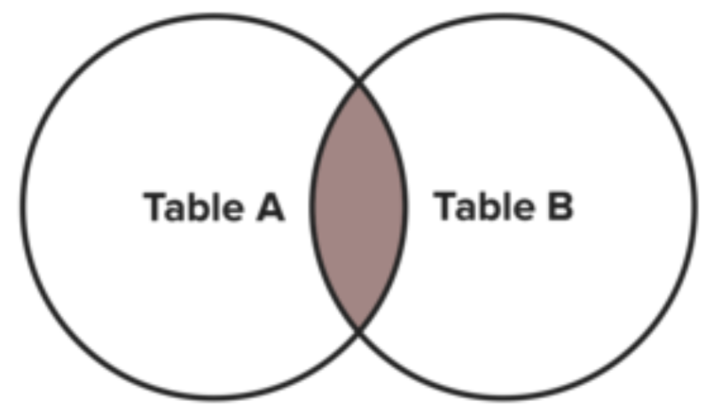
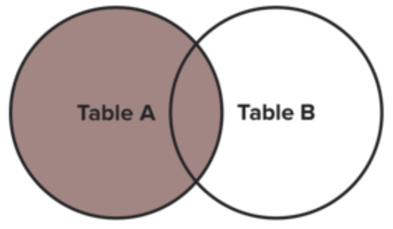
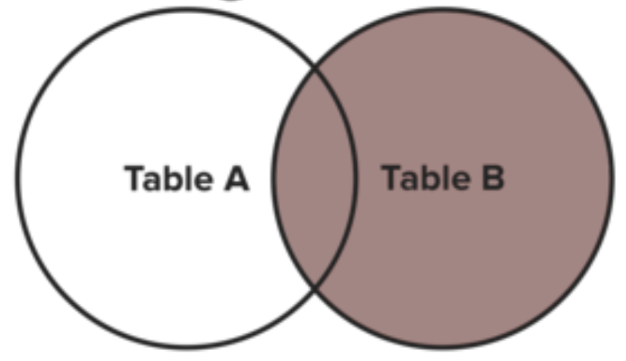
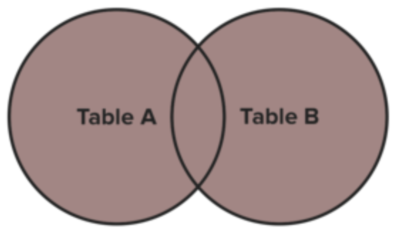
DB: Subqueries
Logical operators |
IN | True if value exists in a list of values. |
EXISTS | True if subquery returns at least 1 row. |
ANY | Compares value to each value in a list, returns TRUE if matches. Must be used with a comparator e.g. =, <, > |
ALL | Same as ANY but all values must match to be true. |
Join equivalences

Left-join equivalences
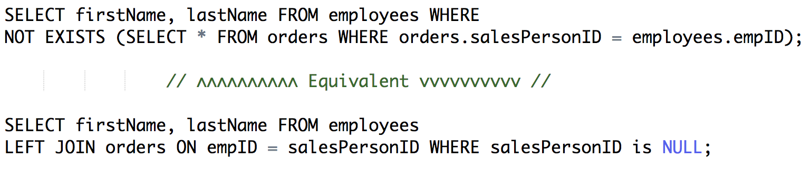
DB: The Database Management System (DBMS)
File based systems
- Data stored in different files, each with specific format, each different application must understand the format of the files that it’s using.
- Lots of room for human error and other issues with data including:
- Repeated data
- Referenced data
- Incorrect data
- Multiple locations of data
Database provides...
- Reliable data storage accessible by users maintaining privacy and data integrity.
- DBMS is a software that implements a database providing:
- Data Definition Language (DDL) → Structure in which data is conceptually stored. A table is called is a scheme, a group of tables, schemas.
- Data Manipulation Language (DML) → Operators e.g. insert, delete, select
- Data Control Language (DCL) → Control access to the database
Structured Query Language (SQL)
- Declarative non-procedural language where we say what we want and not how it’s supposed to be done.
ANSI-SPARC Architecture
- DBMS framework developed in 1975.
- External level → different views of database tailored to users’ needs.
- Conceptual level → organisation of entire database contents, i.e. what data is stored and how including relationship between data and its constraints.
- Internal level → physical data storage, how data is described, indexed and ordered.
Data independence
- Logical: Capacity to change the conceptual schema without having to change the external schemas or application programs e.g. adding new column to table doesn’t affect view of existing columns.
- Physical: Capacity to change the internal schema without having to change the conceptual schema e.g. changing of storage devices does not affect structure of relations.
SOC: Society and Censorship
Evolution of Information
- Print media → spread information via hand-copied material.
- Telegraph → first instant communication system.
- Telephone → instant feedback from a message.
- Computing Industry → worldwide, everyone uses computers.
- Internet → connects machines being able to easily share ideas with others.
Evolution of the web
- Web 1.0: Hypertext website sharing, bound documents by hyperlinks.
- Web 2.0: Platform for socials, a form of user interface and collective intelligence.
- Web 3.0: Semantic web, Internet of Things, machine learning and use of big data.
Smart devices applications
- Home automation such as heating and fridges.
- Travelling purposes including use of e-tickets and online reviews.
- Consumerism, provide goods online without a physical space (e-commerce).
- City management, divert traffic through the use of location and historic data.
Digital exclusion
- Seperation of people in terms of technological ‘haves’ and ‘not haves’.
- Can be caused by slow broadband roll-outs to rural areas e.g. bigger cities tend to receive investment for telecom networks, however, smaller villages may not have access to the same technology.
- Includes other causes such as accessibility, time, price, disability, location, motivation and skills.
Censorship
- Blocking access to facts or preventing publication of information.
- Whistleblowers expose secret information to the public e.g. Snowden had released secret information about the NSA to the public via journalists.
- Motive: Information is power, using this people and companies can generate profits.
State censorship is within the country e.g. blocking adult websites. This can cause a lack of trust with government and digital exclusion amongst people. | Corporate censorship is within companies only e.g. tobacco selling companies block research results from the public. This can affect healthy negatively and reduce profits. |
SOC: Privacy, Surveillance and Governance
Privacy threats
- Good example is Google street view where it can potentially catch a picture of you, or the use of flash cookies where it gathers information for a later use. Other examples:
- Unauthorised or unintended collection of information by anyone.
- Unauthorised or unintended use of information by anyone.
- False, misleading or outdated information.
- Incorrect or unwanted inferences
Legal
- Legal rights to people in regards to personal data held about them by others.
- Places obligations on those who store and use personal data.
- General Data Protection Regulation (GDPR)
- Gives individuals better control over their personal data, you must comply if you collect any information about anyone in Europe.
- The relationship between controllers and processors must be documented.
Surveillance
- Act of monitoring a person, includes social networking sites, blogs and messages.
- Governments often argue they need to monitor what people are looking at for the sake of national security.
- US Patriot Act 2001 → ‘Innocent until proven guilty’ allows to search through people’s emails and telephone records without a court order.
Avoiding surveillance
- Use of end-to-end encryption: Never share your private key to anyone.
- Browse using HTTPS: Encrypts page content so sent packages must be decoded.
- Encrypt instant messaging: Examples → Adium and Pidgin for maximum security.
- Browse anonymously: Hide your location using a Virtual Private Network (VPN).
Hacktivism
- Act of hacking with moral intentions e.g. wikileaks had hacks into databases in order to publicise censored information that they think ‘should’ be shown to the general public.
SOC: Copyright laws and Software protection
Intellectual property
- Any unique product of human intellect that has commercial value e.g. books, songs, paintings, chemical formulas, computer software.
- Owner has natural right to the own the property, supported by John Locke’s theory.
- This gives inventors exclusive rights to their idea but only for a finite period of time, after which they must apply for a patent.
- Companies can use trademarks, signs which are capable to graphically represent goods or services e.g. Apple Logo.
Copyright law
- Provides the owner with exclusive rights to use the work.
- Other people or companies can use the work of the original owner if they have their consent to do so.
- Any unauthorised use of work is classed as a copyright infringement.
Patent law
- Intellectual property on drugs, gives the owner the exclusive right of an invention for up to 20 years.
- Protects against independent development of something based on the same idea.
- Takes a long period of time and money in order to gain a patent (UK roughly 3 years).
Law of Confidence
- Protects information with a very wide scope e.g. trade secrets, lists of clients and contacts, ideas not yet expressed in a tangible form.
- Flexible and adaptable to technological advances but limited to information of confidential nature.
Online Piracy
- Pirate: Someone who a person believes is unfairly trading on their creation.
- Piracy: Act of unfairly trading on a person’s creations
- Example: Kim Dot Com, owner of file-hosting site MegaUpload where users could share files for free, later used for piracy as it was an easy way to send files to others.
Combating Piracy
- Digital Rights Management (DRM): Access control mechanisms used to restrict medium usage by inhibiting usage by multiple parties.
- Web-tracking: Digital Economy Act 2010, holders send IP addresses of downloaders to ISP who then contact the customers.
Free Software: Open Source
- Freedom to run the program, adapt the program and redistribute the program.
- Programmers develop software in return for credit enhancing their reputation and make grants easier to acquire.
- Shareware suggests that you can download software for free but should pay the developer a small reward e.g. Humble Bundle.
- Copyrights, Designs and Patent Act 1988 protects those that do want a payment in return for their software, applies same rules as Copyright Laws.
SOC: Malware
Taxonomy of Malware |
Trojan | Malicious software masquerading as something else. Normally used to steal information and gain control. | Back Orifice, 1998, user installs server-side program, 3rd party can control and access machine. |
Virus | Embedded program that copies itself to other programs. Resident viruses copy into memory and run in background. Non-resident viruses find hosts to infect and spread. | Conficker, 2008, 15,000,000 computers infected due to Win32 weakness to create remote controlled botnet. |
Worm | Copies itself across a network, doesn’t need to infect across a network, often spreads across emails. | Stuxnet, 2010, created by Israel and US to attack Iran’s nuclear facilities.
|
Zombie | Groups of machines leased out to 3rd parties for flooding servers with requests leading to denial of service (DDoS) or to send out widespread spam | Botnet, 2010, sent Trojans in email attachments, had 30m machines and sent out 3.6b emails per day. |
Ransomware | Encrypts all user data and forces users to pay ransom to get key. | NHS, May 12 2017, affected 150 countries and 200K+ machines. Required $300 first 3 days, then $600 after 6, otherwise deleted. |
Gaining access
- Installed on a disk where autorun is enabled.
- Bad link in an email or a website
- Malicious code inserted by hacker
- Exploitation of OS weaknesses
- User installs it unknowingly
Effects of Malware
- Breaks operating system features such as not being able to access anti-virus scan software online, can also create new directories and allow pop ups.
- Generates large volumes of network traffic known as a DDoS.
- Keystroke logging to steal personal information.
- Computer is recruited into a Botnet and leased out to 3rd parties.
Malware Practitioners
- Criminals: Stealing personal data for malicious use, can lead to identity theft.
- Script kiddies: Hack for the fun of it or curiosity to test vulnerabilities.
- Anarchists: DDoS against government agencies e.g. Anonymous.
- Government agencies: Such as GCHQ with their Rolling Thunder DDoS.
Malevolent Online Practices
- Phishing: Spam email communication containing link to be accessed.
- Social Engineering: Collect data about a person (rubbish, social media, shoulder surfing). Nigerian Prince asks for money or via dating site then asks for money. Can also pose as somebody else e.g. changing personal data over the phone.
- Grooming: Gaining trust by being nice to victim, may reveal information such as personal data for online banking or involve them in a crime unknowingly.
- Online Stalking: Lateral surveillance, act of viewing person without them knowing, involves checking a prospective dates and employees.
Social effects of Information systems
- Couch Potato Kids: Led to childhood obesity (30.3% in 2012), internet and game addiction e.g. WoW is often blamed for divorces.
- Cyberchondria: Belief that one has rare and serious disease, result of self diagnosis on the web.
- Transparency: UK government is committed to open data, posting up-to-date data to the public. This leads to accountability, awareness and understanding.
Battle for Data
- Drugs are bought under the pretence of proven effects.
- MPs expenses are published online.
- London Organising Committee for the Olympic Games (LOCOG) spent £8.8b compared to budgeted £2.4b, should information about public money be available?
SOC: Professional Issues
Ethical dilemmas
- Hacking: UK Government spent £8.8b on Olympics through private company and denied information requests, thus public will never know how money was spent.
- Personal data: One may have an application that searches for people, grouping many websites together. Should this sort of data be released to public?
Liability
- Product: Consumer protection act 1987 (CPA) imposes liability on the producer of a defective product → applies to hardware but not software.
- Contractual: Supply of Goods and Services Act (SGSA) binds software supplier to provide service with reasonable care. Doesn’t apply to software sold without some form of contract.
- Negligence: Imposes liability on person that acted carelessly under common law. Any form of failure to adhere professional standards is negligence e.g. sharing personal data or voicing opinions on social media.
Software errors
- Type conversion, overflow, truncation: Mars Climate Orbiter 1999, Lockhead Martin calculated thrust in foot pounds but Jet Propulsion Lab calculated in newtons. Orbiter approached Mars at 4.45 times the speed #toast.
- Race conditions and concurrent tasks: Amazon price war between bots, one book was undercutting another book that always set its price higher, price peaked at £23m.
- Incorrect synchronisation: Postmasters wrongly accused of false accounting when in reality there was an issue with the Horizon system.
Data errors
- Entering wrong data: Dutch chemical plant explosion 1992 due to single mistyped character as worker entered ‘tank 634’ instead of ‘tank 632’.
- Incorrect data manipulation: Ariane 5 launch 1996 ($500m), self destructed 40 seconds after launch as an exception occurred without a way to handle it.
Three laws of Robotics
- Robot may not injure human, or allow a human to come to harm.
- Robot must obey orders given to by human beings except where such orders conflict with the first law.
- Robot must protect its own existence as long as it does not conflict with first and second law.
SYS: Analysis and Design
System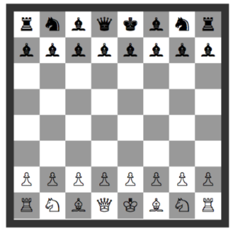
- Collection of interrelated parts are taken together to form a whole such that:
- The collection has some purpose.
- Change in any parts can lead to or result from a change in some other part.
- Open: Has an exchange
- Closed: Isolated from the environment.
Electronic data interchange
- Data structured in agreed format so that it is is easily readable by other systems.
- User usually has no interaction with the system.
Steps in SDLC
- System planning and selection
- Resources are limited so projects must be limited.
- Analyst gathers information and builds the case to aid selecting projects.
- May look at long-term and big impact, or short-term and small projects.
- System analysis
- Focuses on gathering data and understanding the use of it.
- May look into personas and determine how proposed systems should function
- Systems design
- Includes human-computer interaction → contact between user and system, data entry and prototype designs.
- Looks in to databases and files and how they can be analysed and modelled.
- Systems Implementation and Operation
- Convert designs into a working information system.
London Ambulances case study
- Calls from people directed to nearest ambulance so time of arrival is minimised.
- One day, the system had failed causing many death of people as the ambulances would be sent to the wrong places, eventually reverted back to old system.
Door-to-Door case study
- Want people to travel from A to B using the smallest environmental footprint possible.
- Must think about how people make travel choices by looking at their whole journey and examining how each part of the travel connects.
Data flow diagrams (example)
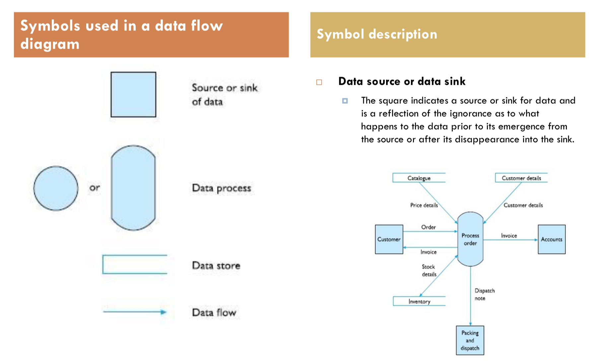
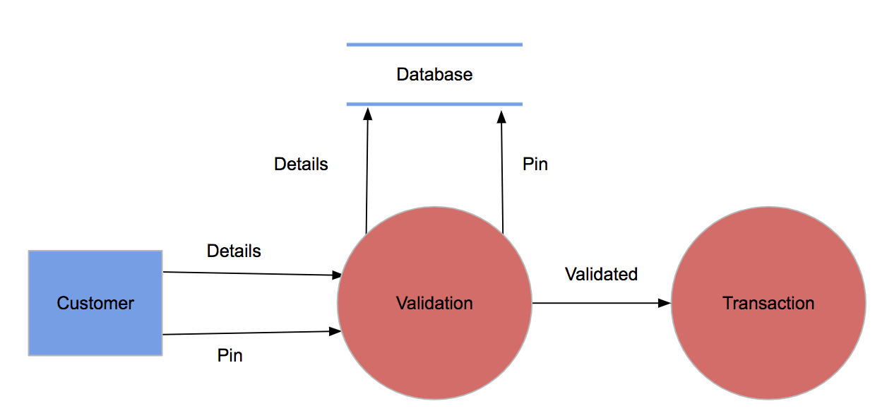
SYS: Disaster Recovery
Disaster recovery planning
- Designed to reduce likelihood of a disaster but recognises that disasters do occur, when that happens we must look at limiting its impact.
- Must identify and protection of an organisation’s critical processes to main continuity.
e.g. In 2015, storm Desmond has flooded the generator in Lancaster causing 55,000 homes not having power, this included the University where it had to send its students home.
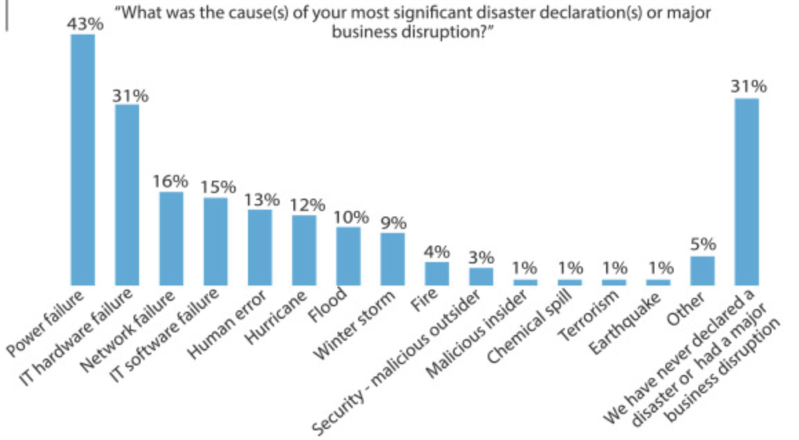
Backup systems
- Synchronous replication: Remote copy of data created simultaneously as primary site is updated. After disruption, operations can resume almost immediately.
- Distance: Latency increases with distance, delays in propagating updates can affect performance and reliability e.g. host must get acknowledgement.
- Asynchronous replication: Covers any distance without affecting application performance since no propagation delay involved.
Mechanisms to ensure business continuity
- Analysis capability: How your organisation would currently respond to disaster.
- Analysing risk: How different disaster scenarios would affect organisation.
- Recovery time: Time from data loss to recovery.
- Recovery point: Acceptable amount of data loss.